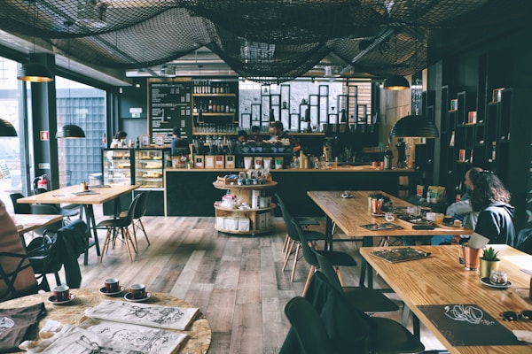

Pasión, Origen y Tradición desde 2018
Cafetería Aromas nació de un sueño compartido: transformar el hábito diario de tomar café en un ritual de encuentro, calma y apreciación sensorial en pleno corazón de la ciudad.
En la primavera de 2018, inauguramos nuestro primer pequeño local en el barrio porteño de San Telmo. Lo que comenzó como un modesto mostrador de extracción equipado con una máquina espresso tradicional y pocos metros cuadrados, rápidamente se convirtió en un punto de reunión para vecinos, estudiantes y amantes del buen café.
Para el año 2020, dimos un paso fundamental en nuestra identidad: establecimos alianzas de comercio justo con pequeños productores y cooperativas cafetaleras en Huila (Colombia) y Minas Gerais (Brasil). Esto nos permitió seleccionar granos de origen único con trazabilidad garantizada, respetando tanto los tiempos de la tierra como el trabajo de las familias agricultoras.

Con la llegada de 2022, incorporamos nuestra propia tostaduría artesanal en el local. Este hito nos permitió ajustar cada curva de tueste para resaltar las notas naturales de chocolate, avellanas y frutos rojos características de nuestras cosechas seleccionadas, además de formar a un equipo de baristas certificados dedicados a la excelencia en cada taza.
Hoy en 2026, mantenemos encendida la misma llama del primer día. Cada grano es molido en el momento y cada receta de pastelería es horneada cada mañana con materia prima de primera calidad. Creemos firmemente que detrás de cada taza hay una historia que merece ser contada, y queremos seguir compartiéndola con vos.